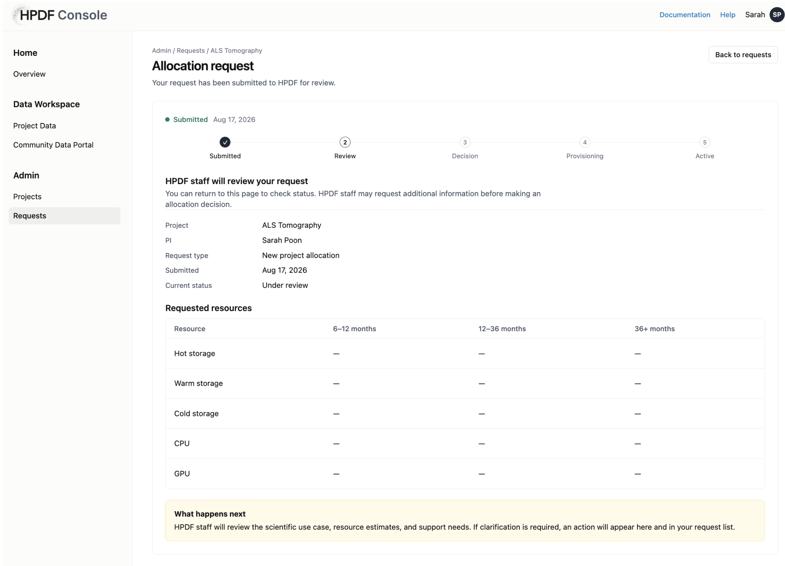
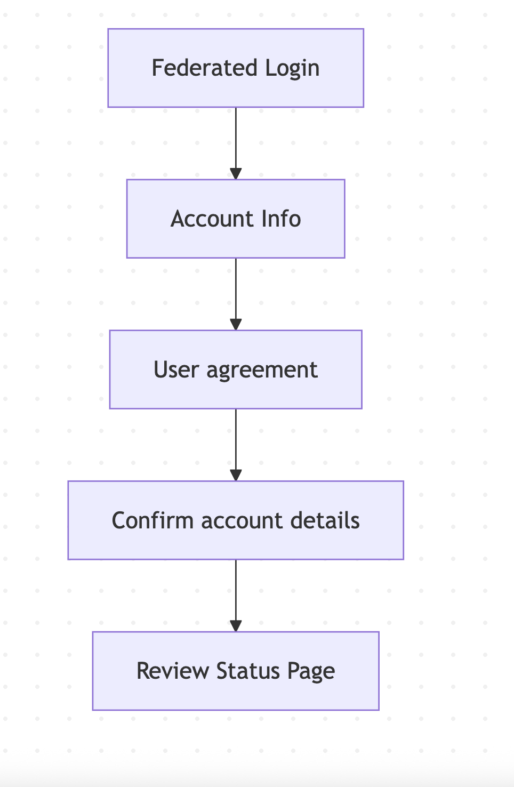

HPDF Console
Designing for AI tools, with AI
HPDF Console is an AI-enabled data platform for a DOE user facility. This case study explores two sides of designing with AI: creating interactions that integrate AI into the user experience, and experimenting with AI as a tool within my own design process.

01 · Designing with AI
Exploring AI within the Console
The High Performance Data Facility (HPDF) is a DOE user facility designed to accelerate scientific discovery by providing data services at scale. HPDF Console is a work-in-progress platform that enables facility users to access, explore, and work with data stored at HPDF.
Scientific data takes many forms, from simple CSV files to high-volume data cubes. In my early explorations of the Console, I focused on a common scenario: a scientist wants to explore two datasets that don't share a common data model. I used this scenario to explore how traditional data tools and AI capabilities could work together within the same interface.
02 · Designing with an AI agent
Creating our design.md file
Separate from the main data platform, I was tasked with quickly designing the onboarding and allocation request process. At this point, I decided to experiment with using AI to accelerate that process.
design.md
files encode a product's UX and visual design decisions in a format
that both humans and AI can read, allowing agents to generate new
screens that remain consistent with the rest of the product.
A common workflow for creating a
design.md file is to
provide an AI agent with an existing website and a
design.md template, then
prompt it to generate the file based on the site's design. In my
case, however, I had only a handful of early mockups rather than a
live product. I uploaded these mockups as a starting point and,
through a series of prompts, asked the AI to generate both a
design.md file and an
HTML prototype of the allocation request process.
Because the source material was limited, the AI had to make many
design decisions on my behalf, and some of its initial choices
weren't ones I would have made. I iteratively reviewed and refined
those decisions with the AI, using the evolving prototype to
evaluate the design until I was satisfied with both the interface
and the resulting design.md
file.

Design insight
AI could extend the visual language established in the early mockups, but the limited source material meant that design judgment was still needed to evaluate and refine the decisions it made.
03 · Communicating interaction intent
Defining screen flows for AI
Next, I needed to generate the onboarding experience for new users.
My first experiment was to provide the AI with a journey map
developed by our UX researcher, along with the
design.md file.
The first attempt produced a screen with a progress stepper whose first step was labeled “See demonstrated value,” which was an overly literal interpretation of the journey map. More importantly, as I walked through the generated flow, I noticed screens and interactions were missing that I intuitively knew the experience needed.
I realized that the journey map was at the wrong level of abstraction
for this task. Instead, I mapped out the specific screens and
transitions I wanted. To keep the input structured and
machine-readable, I encoded the flow as a Mermaid diagram and
provided it to the AI along with the
design.md file.
The resulting prototype closely matched the experience I had intended.

What I learned
A journey map communicates the broader user experience, but it was at the wrong level of abstraction for generating this interface. The AI needed a screen-level representation of the interaction flow to reliably generate the experience I intended.